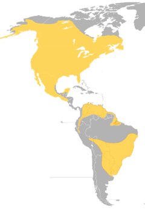
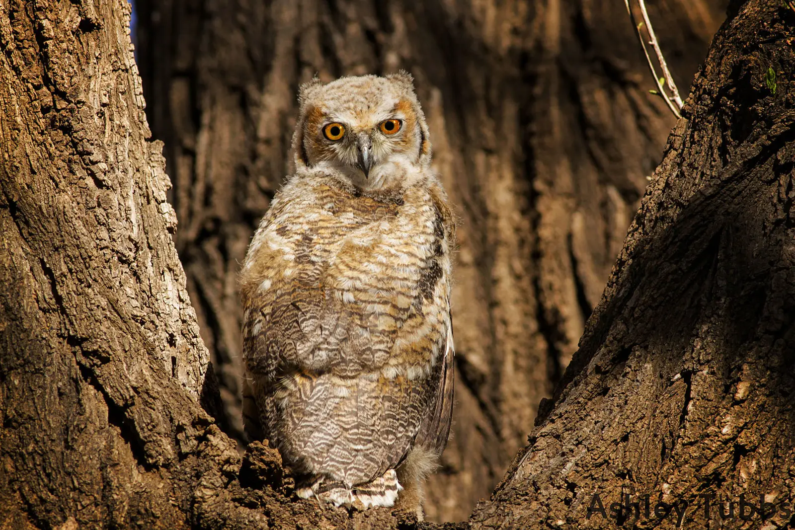
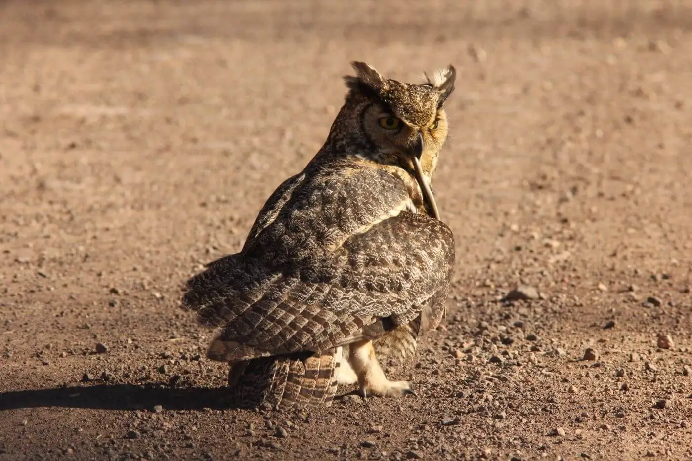
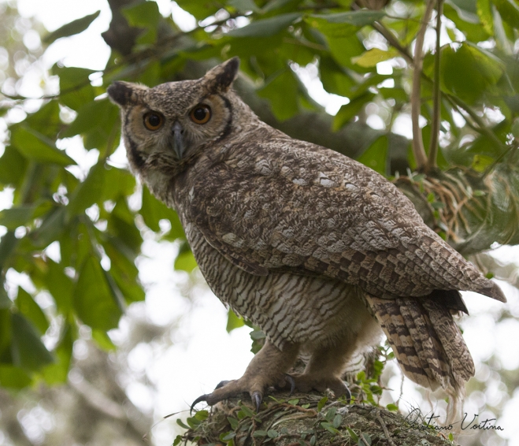
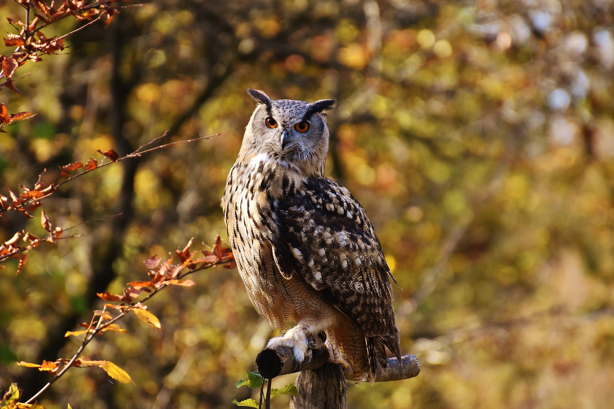
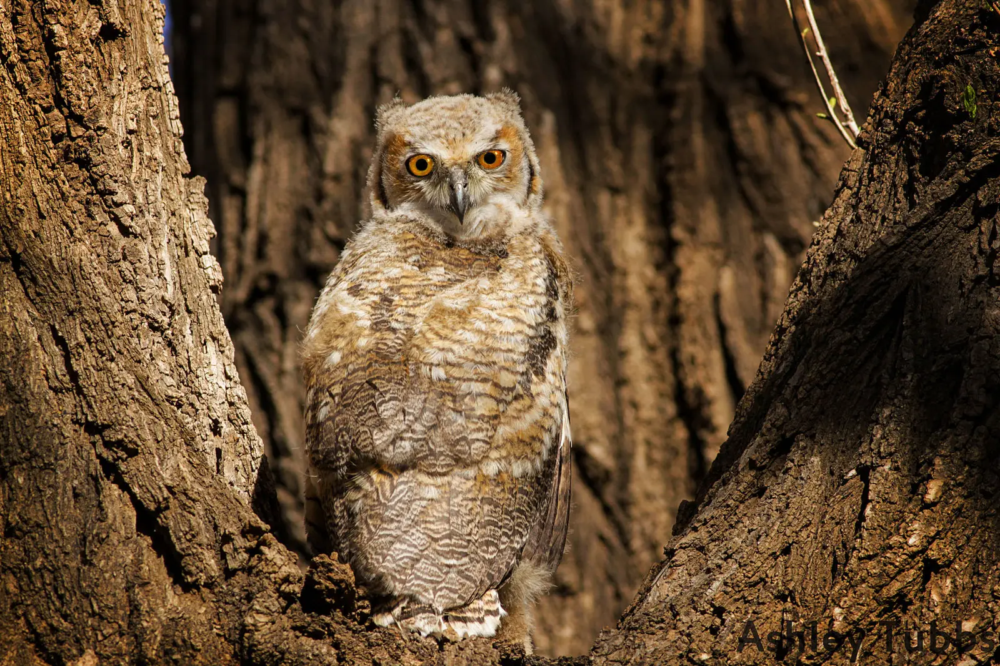
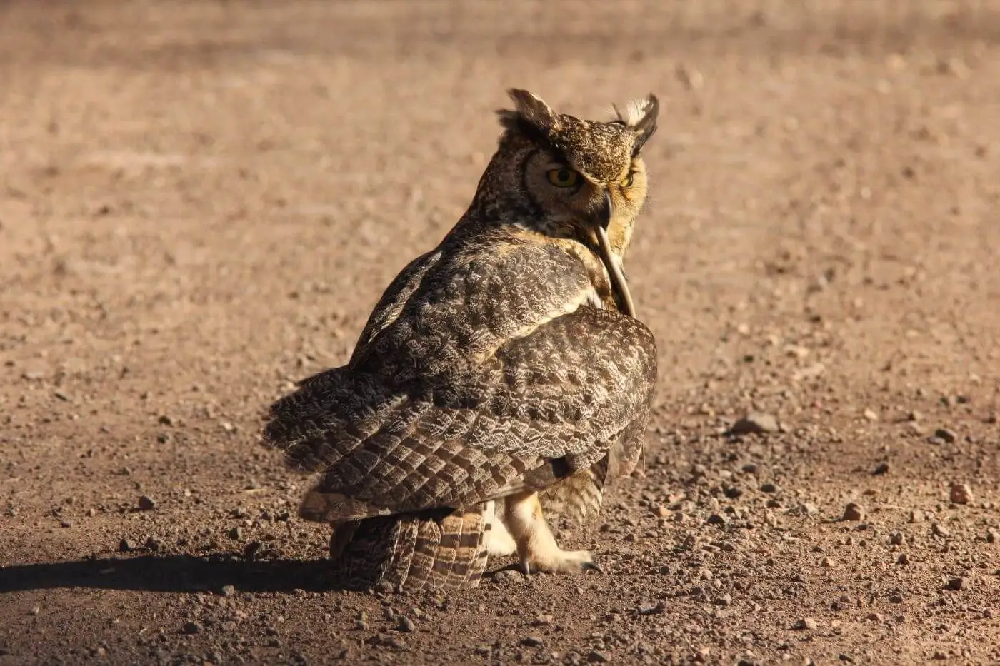
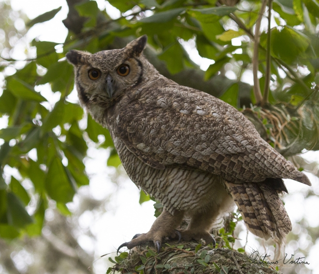
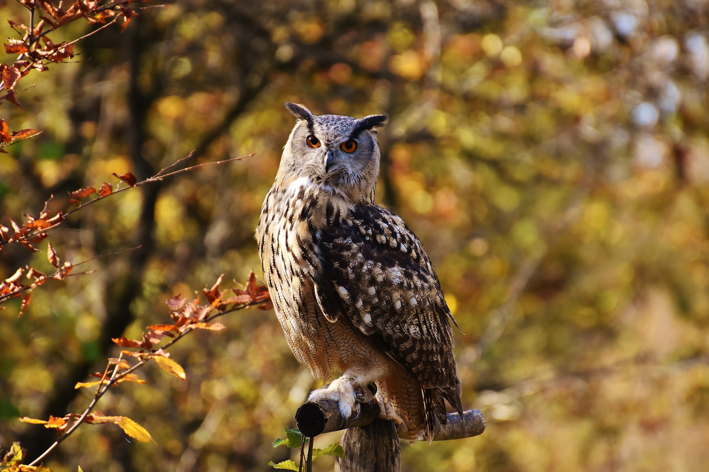

Nomes Populares:Também conhecido como corujão, corujão-orelhudo, corujão-das-lagoas (Ceará), corujão-da-virgínia, joão-curutu, jucurutu (Rio Grande do Norte) e mocho-orelhudo.
Atualmente a espécie não corre risco de extinção.
Classificação Biológica
Dominio: Eukaryota
Reino: Animalia
Filo: Chordata
Classe Aves
Ordem: Strigiformes
Família: Strigidae
Espécie: B. virginianus.
Nutrição Geral
Tipo de Nutrição: Heterotrófico.
Mamiferos Pequenos: como lebres, ratões e gambás.
Aves: incluindo patos, gansos, garças e até outras aves de rapina de médio porte.
Répteis: como sapos e cobras.
Grandes insetos: como Aranhas.
Essa coruja é conhecida por sua habilidade de detectar presas em pleno voo, utilizando suas garras afiadas e bicadas precisas para capturar e matar suas vítimas. Durante o dia, o jacurutu descansa em locais escondidos e torna-se ativo ao anoitecer ou no início da manhã.
Morfologia Básica e Coloração
Tamanho e Dimensões: Os jacurutus são aves de grande porte, com um comprimento que pode chegar a 60 cm. As fêmeas geralmente são maiores que os machos e podem pesar até 2.503 gramas. A envergadura das asas varia entre 91 e 153 cm.
Coloração: A coloração do jacurutu é adaptada para camuflagem, sendo geralmente clara com faixas marrons por baixo e marrom-manchada, geralmente com marcações pesadas e mais escuras por cima. Todas as subespécies apresentam barras escuras ao longo dos lados em certa medida. Uma mancha branca de tamanho variável é vista na garganta, que pode continuar como uma listra que desce até o meio do peito. Variações individuais e regionais na coloração geral existem, com indivíduos do subártico apresentando uma cor amarela desbotada, enquanto aqueles da costa do Pacífico das Américas do Norte, Central e do Sul podem ter cor marrom-escura coberta com manchas pretas.
Essas características físicas permitem que o jacurutu seja um predador eficiente em seu habitat, utilizando sua camuflagem para se esconder enquanto caça e suas dimensões para dominar uma variedade de presas.
Comportamento e Sobrevivência
Comportamento Geral: São aves de hábitos noturnos, ativas principalmente no fim da tarde e durante a noite. Durante o dia, escolhem poleiros em locais estratégicos para descansar, mantendo os olhos semifechados e as “orelhas” erguidas. No período reprodutivo, podem se tornar bastante agressivos, especialmente na época de eclosão dos ovos, como um instinto protetivo em relação ao ninho.
Estratégias de Caça: O jacurutu é um predador eficiente, utilizando sua visão e audição aguçadas para detectar presas em pleno voo. Eles caçam em áreas abertas, usando suas garras e bicadas precisas na cabeça do animal para matá-lo. A ave é capaz de caçar uma variedade de presas, incluindo pequenos mamíferos, grandes insetos, répteis e até outras aves.
Defesa e Sobrevivência: A coloração camuflada do jacurutu ajuda na defesa contra predadores, permitindo que se misturem ao ambiente. Além disso, a agressividade durante a época de reprodução serve como uma estratégia de defesa do ninho e dos filhotes. A vasta distribuição geográfica e a adaptabilidade a diferentes habitats contribuem para a sobrevivência da espécie.
Ocorrência
Biomas de Ocorrência: O jacurutu habita principalmente as regiões de Cerrado, Mata Atlântica e Pampa. No entanto, também é possível encontrar esta espécie em áreas mais abertas e disjuntas desde o leste da Colômbia até as Guianas, bem como no Brasil e no Uruguai ao sul da Bacia Amazônica até a Bolívia, na Província de Buenos Aires no norte da Argentina e no oeste do Paraguai.
Distribuição no território Nacional: No território brasileiro, o jacurutu é conhecido nas regiões Norte, Centro-Oeste, Sudeste e Sul. Há uma população muito rara na Caatinga e outra no norte do país, incluindo Roraima, nordeste e noroeste do Amazonas, norte do Pará e Amapá. A espécie parece ter ampliado sua distribuição nos últimos anos, seguindo o desmatamento e ocupando novos habitats.
Mapa de Ocorrência

Reprodução
Nidifica em ninhos abandonados em árvores, em penhascos, cavernas ou mais raramente em meio a vegetação no solo. Coloca de 1 a 2 ovos nas regiões tropicais e 6 a 7 nas regiões mais frias do continente. Os ovos são incubados pela fêmea por 26-35 dias, os jovens começam a alçar os primeiros voos e sair do ninho com 6 a 7 semanas de vida. O território é mantido pelo casal por vários anos. Ambos sexos podem ser bastante agressivos, durante a época reprodutiva, especialmente após a eclosão dos ovos.

 






